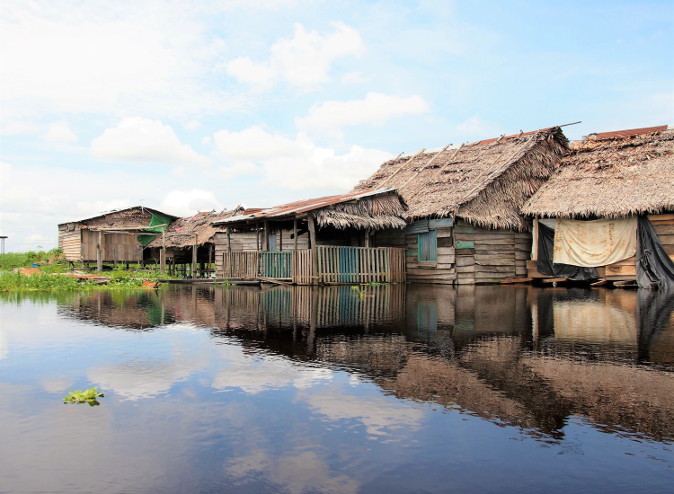

Iquitos ― 標高約106m イキトス
“アンデス”のイメージが強いペルーですが、実は国土の60%はアマゾンの熱帯雨林が占めています。イキトスはその熱帯雨林の真っただ中、アマゾン河のほとりにある都市です。1750年にスペイン人宣教師がこの地に移住してきましたが、原住民の強い抵抗に遭い、小さな村から発展しませんでした。しかしその後1890年～1920年にかけて訪れた天然ゴムブームによって大きく発展し、今ではアマゾンへの入り口として訪れる旅行者が絶えません。
イキトスの行き方
リマから北北東に1300㎞離れたイキトスへは、今のところ空路か船だけが交通手段で陸路はありません。そのため陸の孤島とも呼ばれています。リマからパカルパPucallpaまでバスで行き、パカルパから船で4～5日かけてイキトスへ行くことができます。『陸海空』部族アースのナスDもイキトスまでこの行き方でした。イキトスからコロンビアのレティシア(Leticia)、その隣町でブラジルのタバティンガ(Tabatinga)へは、国境越えの高速船が出ています。
イキトスの町はアマゾン河に沿って形成されており、アルマス広場を町の中心として、高級ホテルやレストラン、旅行会社など、観光に必要な施設は徒歩圏内に集まっています。ベレン地区がおもな見どころで、、市場のあるベレン・アルタ地区へはアルマス広場からタクシーで5分ほどです。
